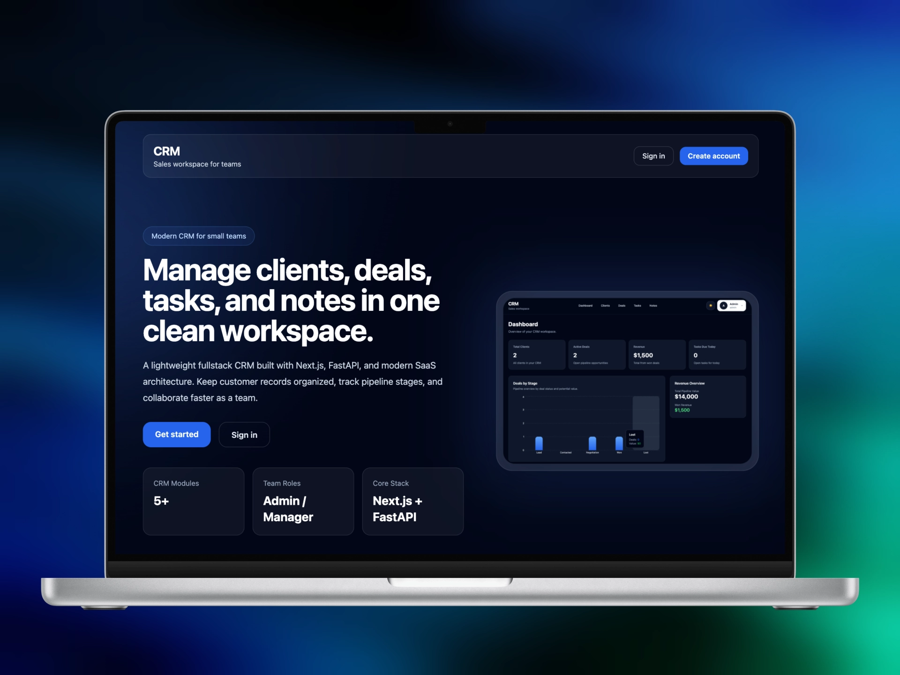
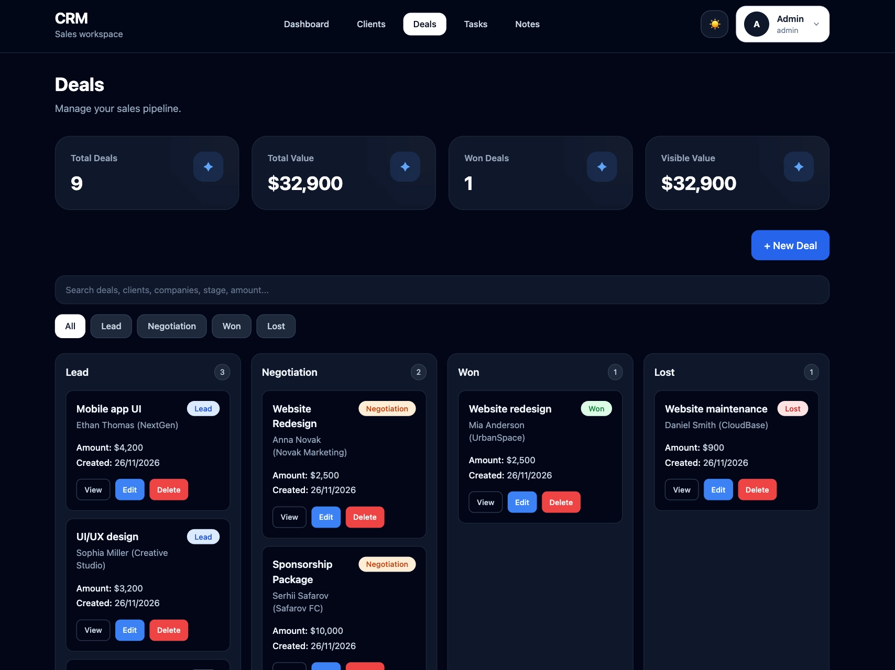
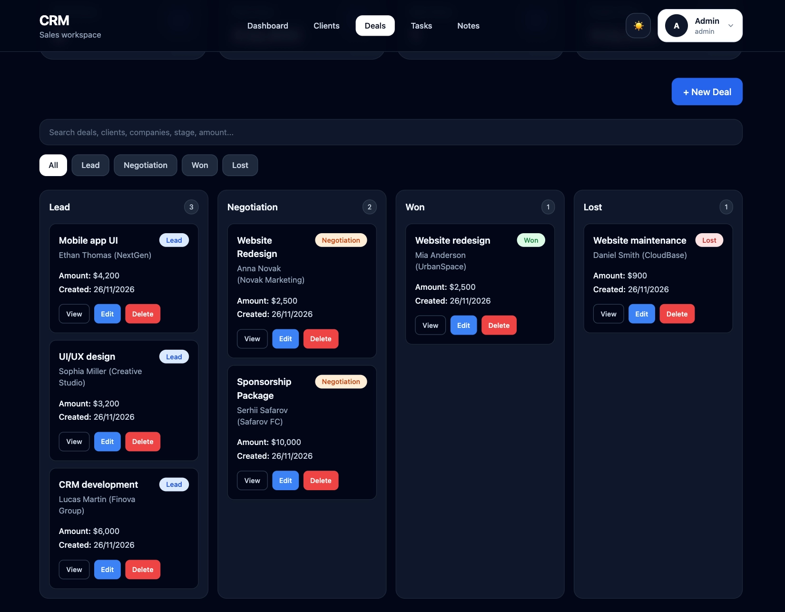
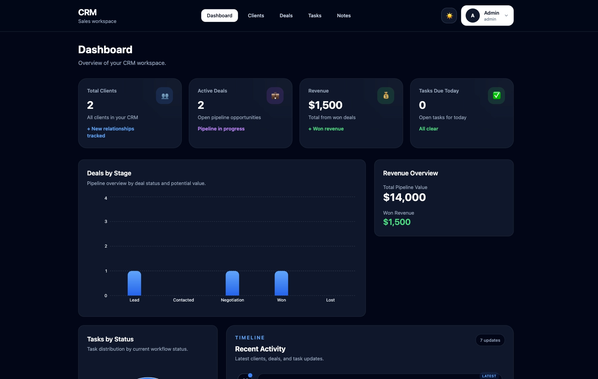
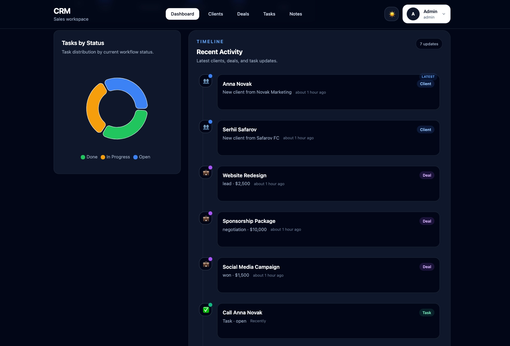
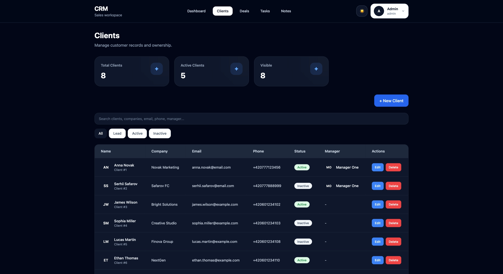
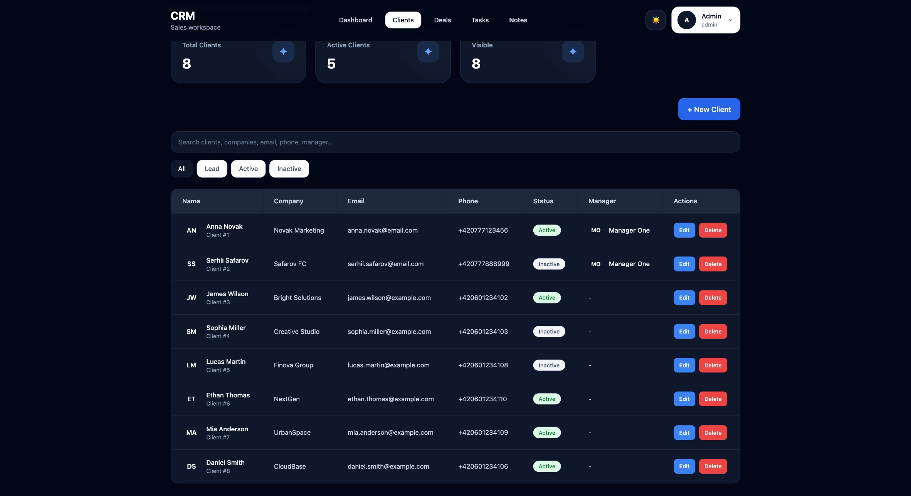

CRM SaaS Platform
A sales-pipeline workspace that brings clients, deals, tasks and notes into one place.

The problem
Small sales teams often keep client details in one place, deals in another and follow-ups in someone’s head. Nothing connects a client to their deals, tasks and notes, and nobody sees the whole pipeline at a glance.
I wanted to build a compact workspace that answers a simple question: what needs attention today, and where does each deal stand?
The approach
Five modules sit under one navigation: Dashboard, Clients, Deals, Tasks and Notes. Each one is built around a single job.
- Deals as a Kanban board. Cards move through Lead, Contacted, Negotiation, Won and Lost, and every move is saved through the API.
- A dashboard for the daily view. It shows total clients, active deals, revenue from won deals and tasks due today, plus a chart of deals by stage.
- Two roles. The workspace is set up for Admin and Manager users, with sign-in and account creation flows.
- Light and dark themes and a layout that works from desktop down to a phone.
Key decisions
Separate client and API. The Next.js interface and the FastAPI service are independent. The UI talks to the backend only through a REST API, so each side can be changed and deployed on its own.
PostgreSQL for the data. Clients, deals, tasks and notes are closely related records. A relational database keeps those links explicit and makes pipeline totals easy to calculate.
dnd-kit for the Kanban board. It handles drag-and-drop interactions while leaving the card design and the saving logic fully under my control.
Challenges
Shipping a public demo without weak defaults. The interface and the API run as separate services, so I configured CORS for the deployed client, and I added a seed script that creates a demo user so visitors can look around without registering.
Months later I went back to the authentication setup. The first
version of the API had a fallback secret key (“changeme”) in the
code. That is convenient on a laptop, but easy to ship by
accident. I changed it so the unsafe path is the one that fails:
the API now refuses to start unless SECRET_KEY is a
random value of at least 32 characters. Demo data is created only
when ENABLE_DEMO_DATA is switched on, and it is off
by default. Every setting is documented in
.env.example and the README.
If I started again, I would add this kind of configuration check in the first commit. Tightening defaults months later worked, but building them in from the start is simpler.
Screens






Scope & next steps
This is a portfolio prototype, not a production CRM. Do not use it for real customer data.
If I continued the project, I would add:
- automated tests for the API and the Kanban flow
- reminders for tasks that are due or overdue
- more granular permissions beyond the two roles